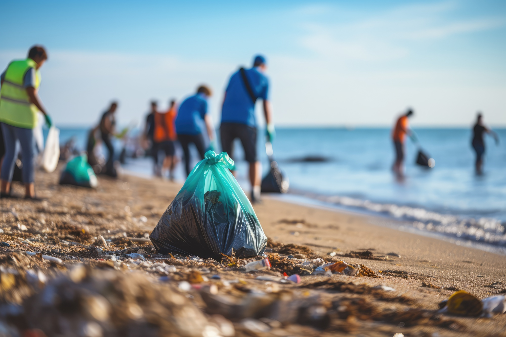

Local Clean-ups
Local clean-ups are a great way to help clean the environment while being active and socializing. They involve volunteers working together to collect plastic and other pieces of litter around beaches, parks, streets, or any other type of public area. Local clean-up events improve the cleanliness and appearance of all of these places. You can volunteer to help in a local clean-up event or join a local clean-up group by looking for any organizations hosting local clean-up events in your area and joining them through their website or form. Most events don't have any cost or fee to join in, meaning you can join together with people help the environment without having to pay, which is a win-win situation.
